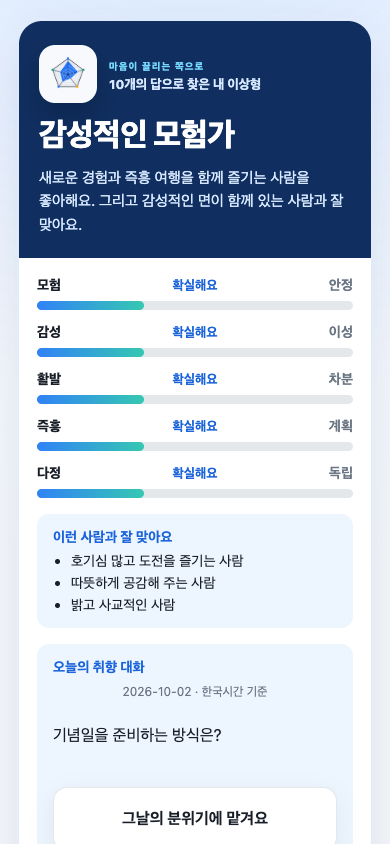

마음이 끌리는 쪽으로
내 이상형,
어떤 사람일까요?
가벼운 10개 질문에 답하고
모험·감성·활발함·즉흥성·다정함의
다섯 축으로 내 취향을 만나보세요.
10문항약 1분 30초토스에서 이용
토스에서 내 취향 찾기토스 앱이 설치된 휴대폰에서 열어주세요.
결과는 이렇게 보여요
예시 답변으로 만든 결과예요. 내 결과는 토스에서 10문항에 답하면 확인할 수 있어요.

전체 예시 접기
아래는 실제 앱 화면의 예시예요. 날짜와 오늘의 질문은 이용하는 날에 따라 달라져요.
10문항에 답하고 내 취향을 확인해 보세요.
결과는 친구와 함께
내 취향 프로필과 잘 맞는 사람의 특징을 확인하고, 결과 카드를 공유해 서로의 취향을 이야기해 보세요.
내일은 새로운 취향 대화
결과 아래에서 매일 바뀌는 질문에 답해 보세요. 오늘의 선택은 테스트 결과를 바꾸지 않아요.
답변에 정해진 가중치를 적용하는 재미용 자기취향 테스트예요. AI 추론·심리 진단·점술·연애 성공 예측·실제 상대 추천이 아닙니다. 이 안내 페이지는 답변을 받지 않으며, 토스 서비스 이용 연령은 만 19세 이상입니다.